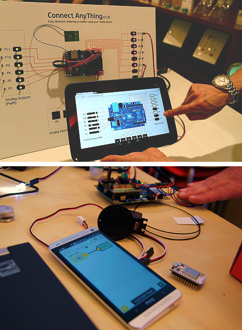
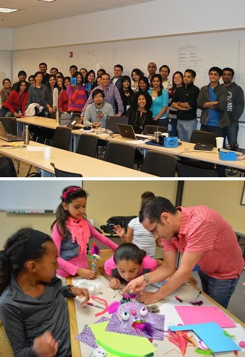

I’m a New Product Developer & Program Manager with an engineering degree, business acumen, and passion for user-experience and design. I lead a multi-disciplinary team focused on enabling hardware entrepreneurs to develop new products. I also lead the development of product proof-of-concepts to explore how to leverage Intel’s technology.
My areas of expertise are: Internet-of-Things, Robotics, and Artificial Intelligence.
Designed and led the program to accelerate the product development of all participants in the reality TV show
Carlos recruited and led a team of 20+ members including: program managers, business mentors, industrial designers, electrical, software, and mechanical engineers. The program guided participants through an agile and user-centric product development process. This included the creation of multiple prototypes, business models, and elevator pitch iterations.
Carlos’ team successfully accelerated the development of 24 product prototypes in parallel. Each team delivered functional demos and great elevator pitches for America’s Greatest Makers’ judges. His work produces hundreds of hours of footage for the TV show production to create Intel’s first reality TV show.
XXXXXXXXXXXXXXXXXXXXXXXXXXX.
Light Puck
Led a team of designers and engineers to develop several iterations of a product prototype
The objective of the Light Puck was to enhance the visibility of the blinkers and tail light of a motorcycle. To do this Carlos’ team added extra lights to the helmet by creating an add-on which can be attached to the back. It uses an accelerometer to detect inclination and stopping patterns to automatically activate the left blinker, the right blinker, and the stop tail light.
In three weeks Carlos’ team explored three potential solutions, focused on one, and developed several prototypes. A final fully functional prototype was showcased at Intel’s Development Forum 2016 in China, Shenzhen.
Startup Initiatives
Designed and led a program to accelerate hardware startups’ product development
The objective of the program was to enable entrepreneurs to develop functional product prototypes with Intel technology. Carlos recruited a team of product managers, software, and hardware engineers. He also stablished a timeline, clear milestones, and drove the program in a timely manner to completion. Carlos’ team worked with: Nixie, a flying and wearable camera startup; SnowCookie, a data analytics startup for skies; ProGlove, a data analytics startup for manufacturing; and OpenBionics, an open source and low-cost prosthetic hand startup.
Carlos’ team co-developed custom made PCB boards and firmware for each startup. They all showcased fully functional prototypes at Intel’s Development Forum 2015 in San Francisco, California.
Halo Drone
Led a team of engineers and designers to develop several iterations of a product concept
The objective of the project was to create a system that would combine the flying capabilities of a drone with the all-terrain abilities of a spider bot. Combining these skills would enable a rescue, or delivery robot, to reach its destination much faster and accurately than current drone designs. In order to create the final concept we used an iterative design methodology to explore several solutions.
In three weeks we explored three potential solutions and focused on one. We created initial industrial designs as well as mechanical, software, and electrical engineering architectures.
Nixie
Mentored the start-up founders and managed the product's program from the Intel side
Intel is pushing the envelope in high-performance wearable devices. As part of this effort, in 2014, the company launched the Make-It-Wearable contest. More than 2,000 ideas were submitted and 10 were selected. Carlos mentored Nixie, the startup which developed the first wearable flying camera. After Nixie won the competition, he led the development of a functional prototype which was shown at CES 2015, at Intel CEO’s keynote. Carlos is currently leading the program, from the Intel side, to launch Nixie to the mass market.
Nixie has more than 7,500,000+ views on YouTube and it is the winner of Intel's Make-It-Wearable challenge ($500K in seed money).
H2O Reminder
Led a team of designers and engineers to develop several iterations of a product prototype
The objective of the H2O Reminder was to help people stay hydrated. To do this Carlos’ team created a product concept which added sensing capabilities to any water bottle. The idea is an add-on in the form of a band that wraps around any type of standard water bottle. It uses an accelerometer to estimate the amount of water consumed.
In three weeks Carlos’ team explored three potential solutions, focused on one, and developed several prototypes. A final fully functional prototype was showcased at Intel’s Development Forum 2016 in China, Shenzhen.
Rapid Prototyping Competition
Led a competition to develop connected products in collaboration with San Jose State University and Intel
Intel’s Rapid Prototyping Competition was created to enable young college entrepreneurs to materialize their connected product ideas. Carlos designed, pitched, and led the semester long program. He was granted $25K in funding used for equipment, hiring, and prizes. The competition was collaboration between Intel Labs and the schools of Arts & Humanities and Engineering of San Jose State University. It was structured as an academic-startup-acceleration program with three major milestones: product ideation + user feedback, functional prototype, and product pitch. The event attracted about 50 participants as well as mentors from: Shazam, Google, Indiegogo, Intel, and SJSU.
The program produced 10 product prototypes and the top three winners received $5K, $4K, and $3K respectively. Read more about it here.
DataMonster
Led the development of a connected robot which interacts with data and people
DataMonsters were created to explore ways to connect people with the massive amount of information flowing through the web. These robots change their behaviors based on two input sources: Twitter and objects detected in front of them. When someone tweets #DataMonster, the robot acts happy and performs a little dance, indicating someone has tweeted. On the other hand, when a person is close, DataMonsters act curious and approach the individual. If the person gets closer, they back up in a shy way. If the person gets too close, they get a little aggressive.
Received an Intel's Division Award for this project. You can download the code and instructions on how to create your own DataMonster from GitHub.
ConnectAnyThing
Led the development of an easy tool for real-time hardware protoyping for Intel Galileo using mobile devices

ConnectAnyThing is a very simple graphical user interface designed to enable rapid prototyping on Intel Galileo boards. We currently have two versions: 0.1.x and 0.2.x. The first version is a one-to-one mapping of the physical board. It allows designers to see the data from the analog input pins and to control the digital and analog output pins. The second version is a more abstract representation of the hardware. It allows designers to connect inputs to outputs to create more complex interactions.
We have more than 700 downloads to date. You can download the code and instructions on how to set up ConnectAnyThing from GitHub.
Intel Automotive
Co-led a rapid prototyping team to inspire Intel's automotive processor road map using user centered design
Intel Labs works very closely with Intel’s business units. In this project Carlos worked very closely with Intel’s Automotive Solution Division to deliver 5 low fidelity prototypes, in 10 weeks, and multiple patent fillings. In order to accomplish the goal, he designed a multidisciplinary internship program formed of: designers, user-experience researchers, and technologists. Carlos used the following user centered design methodology: ideate <-> design <-> build; always focusing on the user and continuously getting their feedback. The final 5 prototypes explored the fields of: vehicle-to-vehicle communications, device integration, ambient information, in-traffic experience, and geo-tagging.
Received an Intel's Division Award for this project.
Rapid Prototyping
Led several workshops to inspire novice innovators to creat with Intel's Galileo rapid protoyping platforms

The Maker movement is inspiring many innovators to create and invent. However, rapid prototyping in hardware is not trivial, it requires basic knowledge of: sensors, actuators, embedded systems, internet, and software technologies. In order to get innovators started with Intel’s Galileo rapid prototyping platform, Carlos designed a workshop which introduced the power of these tools to novices and beginners. The workshop consists of an introduction to user centric design, as well as an introduction to the technologies described above. He also walked everyone through building a simple building block, which then they used to design and build their own project. So far Carlos has conducted this workshop within Intel and several external organizations.
Received recognitions from Intel Public Relations and the Women's Intel Network organization.
Galileo Starter Kit
Co-managed a rapid prototyping team to develop a hardware started kit for Intel Galileo
Intel Labs works very closely with Intel’s business units. In this project Carlos' team worked very closely with Intel’s Corporate Affairs Group. The objective of the project was to develop a hardware solution to enable novices to start developing electric circuits as quickly as possible with Galileo. In order to accomplish the goal, he and his co-manager hired a multidisciplinary team of inters with the following backgrounds: design, technology, and business. Carlos' team used a user centered design approach and developed 3 prototype iterations. The final product was successfully transferred to the corresponding business unit.
The team was awarded the “Best Intern Project” at Intel Labs’ Open House 2014.
Speech-Gestures Vehicle Interface
Developed a system to enable users to experience controlling their vehicle’s radio using speech and gesture commands
The objective of this project was to study the user acceptance of speech and gesture interfaces for vehicles. Carlos set up a car simulator to recreate the driving experience and a remote controlled tablet to simulate a speech-gesture controlled radio. Carlos' team conducted a user study which included in-depth interviews, the use of the vehicle simulator and the remote controlled radio. The results of his team's research indicated that the use of speech and gestures didn’t add any significant value to the user. The use of a Wizard-of-Oz technique allowed the team to rapidly test our hypothesis while minimizing time and technical resources.
The Car of the Future
Developed and integrated the hardware, software, and sensors of an interactive vehicle demo
The objective of this project was to communicate Intel Lab’s vision of the car of the near future. The system consisted of a dynamic video simulating a driver’s commute from home to work. The video was controlled through sensors attached to the vehicle’s seat, as well as a 3D printed steering wheel. Carlos presented this work at Intel’s IDF Conference in Sao Paulo Brazil and at Research at Intel in San Francisco.
This work was covered by Forbes magazine. He also received an Intel's Division Award for his work. Click here to watch a video for more details.
Representing Intel
Represented Intel’s research and products in several public venues
Communicating and sharing Intel's work in public, is crucial to position the comppany as a thought leader. Carlos has represented his team’s research in several conferences including: Intel’s IDF in Brazil and US, Computer Human Interaction (CHI) in the US, AutoUI in the Netherlands and the US, and Research at Intel in the US. He has also promoted Intel’s Galileo rapid prototyping products at: Maker Faire in Italy and the US, Consumer Electronics Show (CES) in the US, and several hackathon’s and MeetUp’s in the Bay Area. Finally, Carlos have also promoted Intel platforms through Intel’s Maker Community official website and “How To” videos.